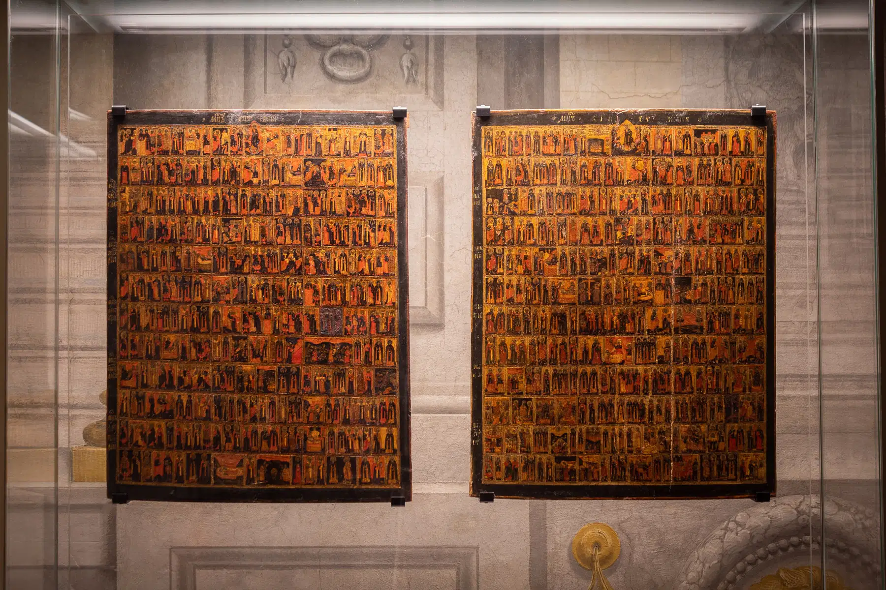

Iuliia
Menologio
This two-paneled Menologio icon is one of the most notable works in the historic collection of 78 Russian icons acquired by the Medici family . It functions as a visual liturgical calendar of the Orthodox Church, divided into two panels corresponding to the two halves of the year . The icon was created in a provincial Russian workshop between 1730–1750, modeled on an annual series of saints engraved in Moscow in 1730 . The most important Christian feast, the Resurrection of Christ, appears prominently in both panels at the top center . The Menologio came to Florence during the Habsburg-Lorraine dynasty and is now permanently displayed at the Palazzo Pitti museum, which opened in early 2022.